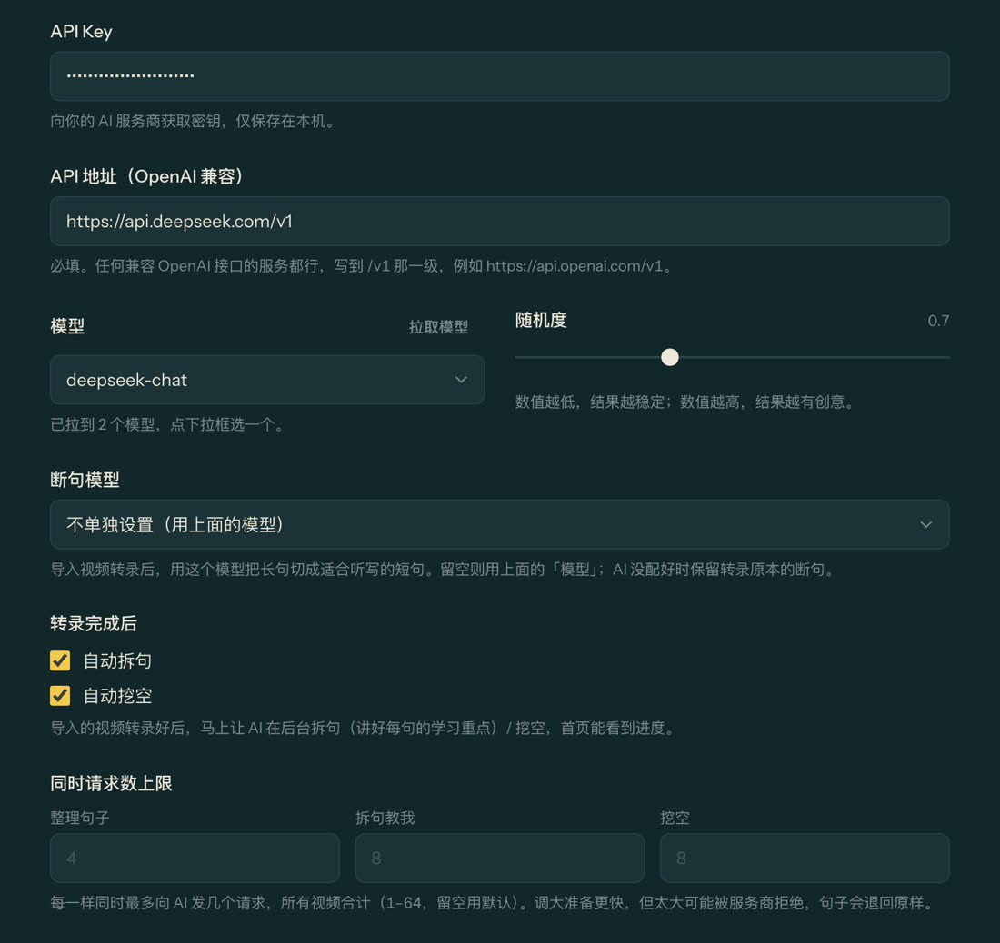

一把用来把视频的声音变成字幕（转录），一把给 AI 用（断句、拆句教我、挖空）。转录有两条路，点一下看看哪条适合你。
视频自带 .srt 字幕？导入时选上字幕文件，连转录都省了。
第 1 步
配置转录
打开 设置 → 转录
第 2 步
配置 AI
任何兼容 OpenAI 接口的服务都能用。拿 DeepSeek 举例，鼠标移到每一条上看位置：
1
填 API Key去 AI 服务商后台拿，只存在你这台电脑上
2
填 API 地址例如 https://api.deepseek.com/v1
3
点「拉取模型」，选一个例如 deepseek-chat，便宜又够用
4
勾上「自动拆句」「自动挖空」视频转好后 AI 就在后台把这些都准备好
打开 设置 → AI

AI 帮你做的事
自动断句：把一口气说完的长段，切成适合听写的短句
转录出来的原文（经常一大段连在一起）
I'm just exhausted by all the noise in the tech industry, been doom scrolling on Reddit and trying to avoid looking at LinkedIn. Let's start with the work culture. Most work advocate the idea that we are a family and we all know it's not real.